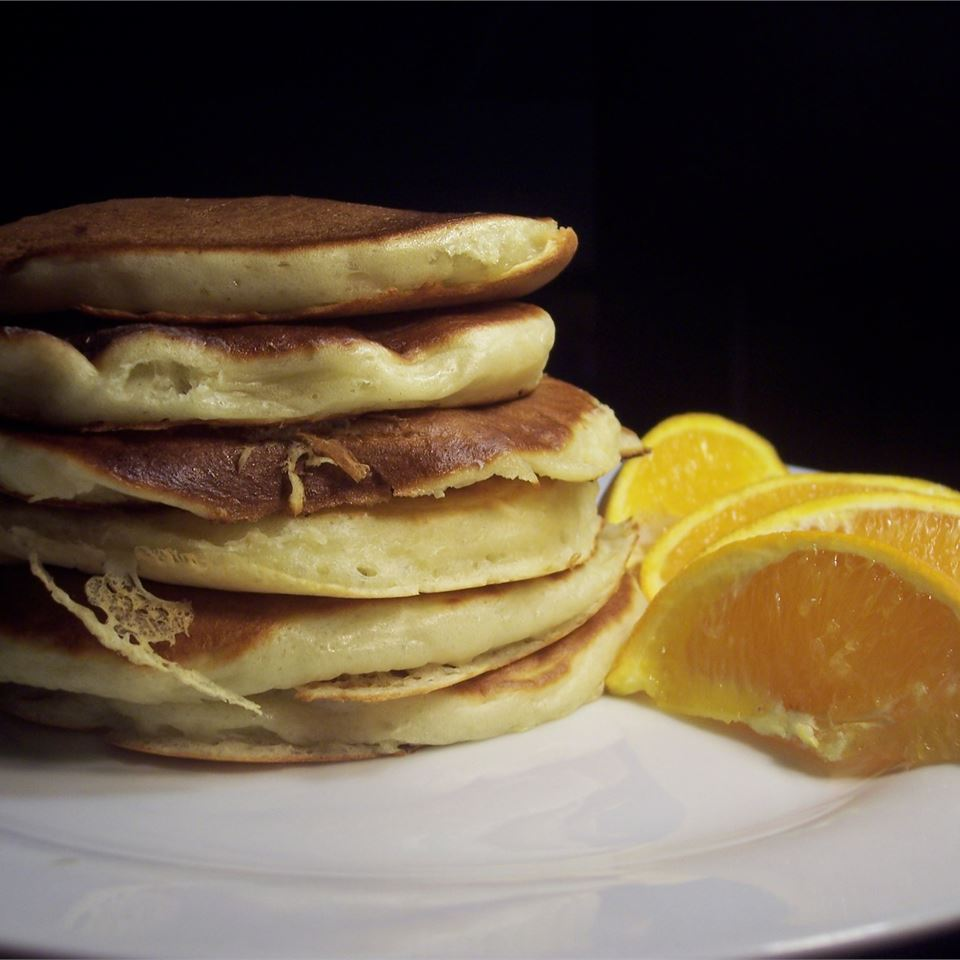

Delicious Buttermilk Pancakes

Description
A delicious recipe for homemade pancakes featuring a unique indgredient: buttermilk.
After many, many iterations and changes made on this recipe, it finally has been perfected,
which can be obviously seen by the raving reviews.
If you make this recipe, please note, it will change your life! Make sure to use a nice
and natural maple syrup to flavor it. These pancakes will pair nicely with anything else
you desire for breakfast!
Indgredients
- 1 1/4 cups all-purpose flour
- 1 egg
- 1 1/4 cups buttermilk
- 1/4 cup white sugar
- 1 teaspoon baking powder
- 1 teaspoon baking powder
- 1/4 cup vegetable oil
Indgredients
- Preheat a skillet over medium heat. Combine all ingredients in a blender. Puree until smooth.
- Pour batter onto the griddle, to form 5 pancakes. Flip pancakes when edges appear to harden. Cook pancakes on other side for same amount of time until golden brown.